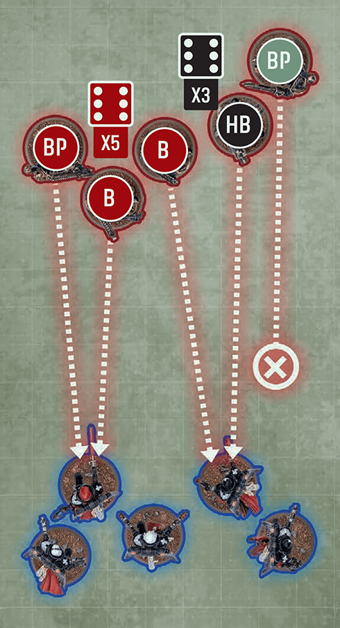

For each model in the attacking unit, select which that model will make with. Models make ranged with ranged , and make melee with melee .
WHILE
can select one or more ranged that model has.
WHILE FIGHTING
must select one melee weapon that model has.
A model that does not have any ranged cannot make ranged , and a model that does not have any melee cannot make melee .
See also
2. 04.02For each weapon selected:
WHILE
Select one enemy unit to be the target of that weapon. Unless otherwise stated, each target must be:
- Visible to the model that has that weapon ().
- range of that weapon.
- Unengaged.
WHILE FIGHTING
Select one or more enemy units to be the targets of that weapon:
- Each target must be engaged with the model that has that weapon.
- cannot select more targets than that weapon’s A characteristic.
When or fighting, can select different targets for each weapon. If cannot select a target for a weapon, or if choose not to select a target for a ranged weapon, the model with that weapon will not make with it.
Some models are equipped with in addition to other firearms. Such models can be an exception to the rules in this section, as may not be able to select all of their to make with.
See also
{kind=link}

A model that does not have any ranged cannot make ranged , and a model that does not have any melee cannot make melee .
Some models are equipped with in addition to other firearms. Such models can be an exception to the rules in this section, as may not be able to select all of their to make with.
In the step (), if a selected weapon has more than one profile, then the controlling player must also select one of those . The selected profile is then used in the step ().
Some of these are known as Hunter . Hunter can only target units with the specified .
Note that if a unit is equipped with more than one such weapon, a different profile can be selected for each model that unit.
When making an attack, that attack is considered to have the same characteristics and abilities as the weapon making that attack.
If any modifiers or abilities apply to an attack, those changes apply to the weapon making that attack until that unit’s attack sequence and all effects of those abilities (e.g. ) have been resolved.
Rules that apply to a weapon that modify rolls apply to the made with that weapon.
Some rules use the term . If a unit is selected to fight, selected to or chosen to make , that unit is .